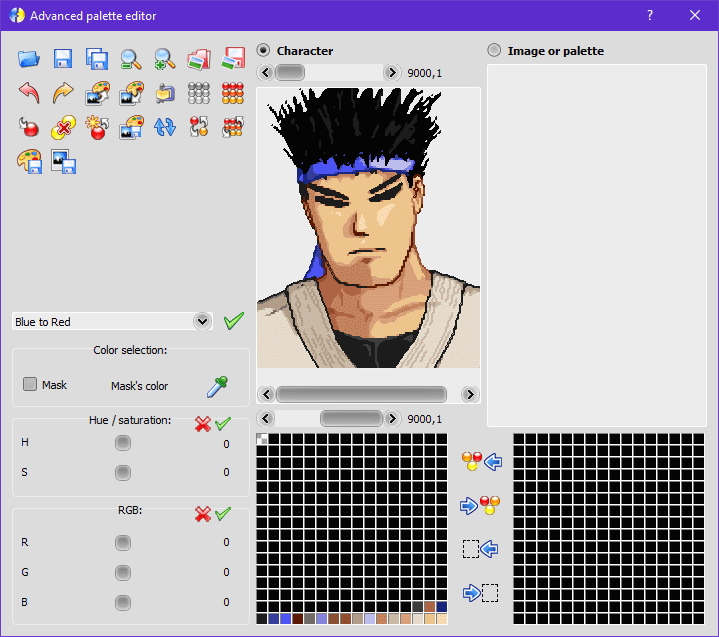

Advanced Palette Editor
This editor is a special one to create and edit palettes, with a lot of more options than the Sprites palette editor.
It is composed by three columns (functions, character and image or palette).
In the middle of the second and third column, you can transfer the selected colors or the selection itself from a palette to another.
Functions
Contains all tools and functions available to modify any palette on the second and third columns. Any modification will be applied in the palette of the checked column.
Open palette from a file
Open a palette in the current column.
Save current palette to a new file
Save the palette of the current column as a new file.
Add to sprites editor by identifier
Add it to the Sprites editor as a new one using the specified identifier.
Decrease the zoom level
Decrease the zoom level of the current column.
Increase the zoom level
Increase the zoom level of the current column.
Load the current image from a file
Load a new imagem in the current column.
Save the current image to a file
Save the image of the current column.
Undo
Undo the last change in the palette of the current column.
Redo
Redo the last undo operation in the palette of the current column.
Generate palette from images
Generate an optimized palette that conatins all colors of all selected images. Note: If the sum of colors is greater than 256, a color quantization algorithm will be used to define new colors that are an approximation of the source ones, to keep the limit of 256 colors.
Insert the current palette in the images
Insert the palette of the current column in all selected images. Note: The image will be adapted to match the palette colors. You can notice a color loss if the palette hasn't the same colors of the image.
Attention: This operation isn't a palette swap, the image indexes will be changed.
Optimized palette for the current image
Generate an optimized palette based on the colors of the current image.
Generate a minimal grayscale palette
Generate a minimal grayscale palette, and adapt the image to it.
Sets the color of the selected slots
Defines a new color in all selected slots.
Remove the duplicate colors
Replace all duplicate colors by a new one.
Add different colors from the other palette
Add all colors of the other palette that the current one doesn't have.
Interval of selected colors in gradient
Generate a gradient of colors in the interval of the two defined colors (only in the selected slots).
Adapt image to match the colors of the current palette
Adapt image to match the colors of the current palette, redirecting its indexes to the first closest color in the palette.
Sort colors by tone
Automatically reorder all colors by tones.
Exchange position of the selected colors
Invert the position of all selected colors. The first selected color will be replaced by the last and the last by the first one, and so on.
Invert all colors (keep the first and last alpha)
Invert all colors in the palette, but keep unchanged the alpha channel of the first and last ones.
Commit changes to the current palette
Commit the changes in the character palette to the palette editor of the Sprites editor.
Commit changes to the current sprite
Commit the changes in the character sprite to the current one in the Sprites editor.
Color effect
Apply an effect in all selected colors of the current palette.
Color selection
Allows to make a fast and advanced color selection.
Mask: preview all selected colors as the mask defined color.
Mask's color: defines the mask color.
Color picker: enable/disable the quick selection mode. Any click in the image selects the corresponding index in the current palette.
Hue / Saturation
Add the specified values of hue and saturation in all selected colors of the current palette. Note: The change will be applied only if you confirm with the Apply button on the top-right.
RGB
Add the specified RGB values to all selected colors of the current palette. Note: The change will be applied only if you confirm with the Apply button on the top-right.
Character
This column handles the character palette (the current one in the palette's editor of the sprites editor.
The name "Character" is for compatibility purposes with Fighter Factory Classic, this doesn't implies that you can use only for characters.
When you open this editor, the current sprite and palette of the sprites editor will be set in this column. Any change in the image doesn't change the sprite. You can apply the changes in the palette using Commit changes, otherwise the changes will be discarded when you close this editor.
Image or palette
This column handles an additional palette and image.
You can use it to transfer colors from a palette to another, or simply create/edit more than one palette at a time.